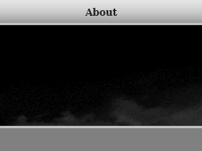
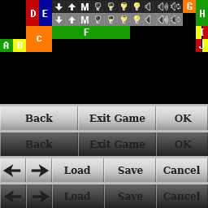
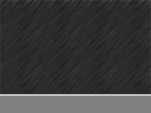
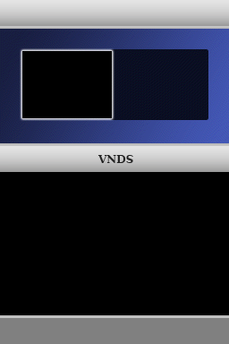
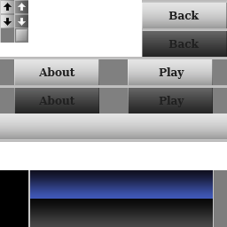

Skinning Guide
Normal skins are stored in /vnds/skins/<skinname>/ and novel-specific skins are stored in a subfolder "skin" of the novel folder.
If an image or font is not available in the novel-skin folder, the version from the regular skin is used.
Images can be in either PNG format or raw bitmap format (extension should be .dta), if both types are present, the PNG version is used. Raw bitmaps load faster than PNG compressed images, but their filesize is much larger. An image converter that can convert to the raw bitmap format is included: "tools/ImageConverter.jar".
about_bg (about screen background)

ingame_tex (ingame buttons)

Named images:
- A: Arrow that marks the selection option on the choice screen
- B: Icon that's shown when the program is waiting for a keypress from the user
- C: 4 image animation that's shown when the program is waiting due to a delay command. The images are all 16x16 pixels and shown in the sequence: top-left, top-right, bottom-left, bottom-right. After all images are shown, the animation starts at the first frame again, but mirrors the images both horizontally and vertically resulting in an 8-frame animation.
- D: Left arrow & left arrow pressed images used by the spinners on the preferences menu.
- E: Right arrow & right arrow pressed images used by the spinners on the preferences menu.
- F: The program uses this area to store the date/time image that it draws.
- G: The image that's used for the bottom bar in the regular view, gets stretched to 256x16.
- H: Similar to G, but used for the menu screens' bottom bar.
- I: Left & right scrollbar track images.
- J: Left & right scrollbar thumb images.
The small buttons on the top are from left to right: save, load, menu, brightness0, brightness1, brightness2, brightness3, sound_off, sound_on, repeat_sound.
loading_bg (novel loading background)
menu_bg (background for ingame menu's)

savemenu_tex (special savemenu images)
select_bg (vn select screen background)

select_tex (vn select screen buttons)

skipload_bg (loading screen for R+Y: quickread)